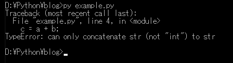
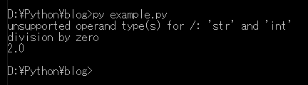
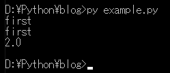
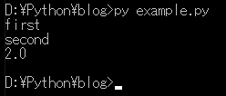
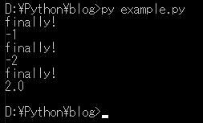
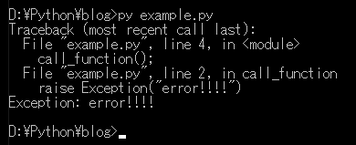
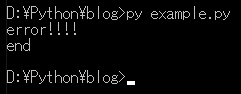

こんにちは。明月です。
この投稿はPythonで例外処理する方法に関する説明です。
プログラムを作成すると様々なエラーが発生することがあります。例えば、stringタイプにintタイプの数字を加算するとか、文字タイプを定数タイプにキャストするとかがあります。
# 文字列タイプに変数宣言
a = "hello"
# 定数タイプに変数宣言
b = 1
# 文字列タイプのa変数に数字いタイプのb変数を加算すうる。
c = a + b
# 結果を出力する。
print(c)
# aを出力する。
print(a)

上の例をみれば4行目でエラーが発生したと表示されます。その後にPythonコードは中断されました。下のprint関数が実行されませんでした。
様々な変数を間違ってエラーが発生することは悪くないです。ただ、エラーをどのように処理することが重要です。
エラー処理を上手くできなければ上みたいにプログラム実行が止まります。
エラーが発生する時にはエラー処理をしてエラー部分のステップを超えます。
# 文字列タイプに変数宣言
a = "hello"
# 定数タイプに変数宣言
b = 1
# 文字列タイプのa変数に数字いタイプのb変数を加算する。
# エラーが発生する可能性がある区間をtry ~ exceptで囲む。 tryの領域でエラーが発生するとexceptの部分に移動する。
try:
c = a + b
# コンソール出力
print(c)
except:
# コンソール出力
print("the error is occurred")
# コンソール出力
print(a)

上の例でエラーが発生する部分をtry ~ exceptで囲んでました。c = a + bのステップでエラーが発生してexceptのところに移動しました。
print(c)でコンソール出力が行わないです。
後、exceptであるコンソール出力してprint(a)が実行されました。
区間内でエラーの種類は一つではなく様々なエラーが発生する可能性があります。そのエラーの種類によってエラー処理を別々にすることができます。
# 関数宣言
def division_function(a,b):
# 例外処理
try:
# aにbを分ける。
print(a/b)
# このエラーはタイプが合わない変数で計算する時にエラーが発生する。、つまりstrタイプ / intタイプならエラーが発生する。
except TypeError as e:
# コンソール出力
print(e)
# このエラーは0で分けると発生するエラー。
except ZeroDivisionError as e:
# コンソール出力
print(e)
# TypeErrorが発生することを予想
division_function("a", 1)
# ZeroDivisionErrorが発生することを予想
division_function(1, 0)
# 正常処理
division_function(4, 2)

上の結果をみればdivision_functionを三回に呼び出しますが、上の二回はエラーが発生します。
でも上のエラー種類が違うので別のprint関数を呼び出します。
参考に上の「エラータイプ as e」構造ならe変数にエラー内容が格納されます。
ここで例外の最上位エラータイプはExceptionです。
# 関数宣言
def division_function(a,b):
# 例外処理
try:
# コンソール出力
print(a/b)
# 最上位エラータイプを一番上に配置
except Exception as e:
# コンソール出力
print("first")
# このエラーはタイプが合わない変数で計算する時にエラーが発生する。
except TypeError as e:
# コンソール出力
print("second")
# このエラーは0で分けると発生するエラー。
except ZeroDivisionError as e:
# コンソール出力
print("third")
# 関数を呼び出す。
division_function("a", 1)
# 関数を呼び出す。
division_function(1, 0)
# 関数を呼び出す。
division_function(4, 2)

上みたいに作成すればTypeErrorとZeroDivisionErrorが発生してもすべてExceptionに行ってしまいます。
# 関数宣言
def division_function(a,b):
# 例外処理
try:
# コンソール出力
print(a/b)
# このエラーはタイプが合わない変数で計算する時にエラーが発生する。
except TypeError as e:
print("first")
# このエラーは0で分けると発生するエラー。
except ZeroDivisionError as e:
print("second")
# 最上位エラータイプを一番下に配置
except Exception as e:
print("third")
# 関数を呼び出す。
division_function("a", 1)
# 関数を呼び出す。
division_function(1, 0)
# 関数を呼び出す。
division_function(4, 2)

上の結果はTypeErrorとZeroDivisionErrorのところに移動しました。
エラーが発生してエラーか、エラーではないかの関係しず、ステップ処理するキーワードはfinallyです。
# 関数宣言
def division_function(a,b):
# 例外処理
try:
# 今回は結果を返却した。
return a/b
# このエラーはタイプが合わない変数で計算する時にエラーが発生する。
except TypeError as e:
# エラーが発生すれば-1を返却する。
return -1
# このエラーは0で分けると発生するエラー。
except ZeroDivisionError as e:
# エラーが発生すれば-2を返却する。
return -2
# 最上位エラータイプ
except Exception as e:
# エラーが発生すれば-3を返却する。
return -3
finally:
# コンソール出力
print("finally!")
# 関数を呼び出して変数に格納
ret = division_function("a", 1)
# コンソール出力
print(ret)
# 関数を呼び出して変数に格納
ret = division_function(1, 0)
# コンソール出力
print(ret)
# 関数を呼び出して変数に格納
ret = division_function(4, 2)
# コンソール出力
print(ret)

一般ソースステップではfinallyキーワードを使わなくてもexceptが呼び出したら次のステップに実行するのでfinallyの必要性を感じられません。
でも関数の中でreturnキーワードと一緒に使えばtryの中でreturnしても最後にfinallyの部分が実行されます。特にリソース管理する部分で使えばいい文法です。
ここまでエラーが発生すればどのように処理することを説明しました。今回は我々がエラーを発生して処理する方法に関して説明します。
# 関数宣言
def call_function():
# エラー発生はraiseキーワードをつきます。
raise Exception("error!!!!")
# 関数を呼び出す。
call_function()

raiseキーワードでExceptionクラスを呼び出すとエラーが発生します。
様々な関数を作成する時、データ検証で悪いデータが入力するかデータ計算結果が予想より使う場合にわざとエラー発生する必要があります。その時に使うことです。
# 関数宣言
def call_function():
# エラー発生はraiseキーワードをつきます。
raise Exception("error!!!!")
# 例外処理
try:
# 関数を呼び出す。
call_function()
# エラー処理
except Exception as e:
# コンソール出力
print(e)
# コンソール出力
print("end")

call_function関数を呼び出すとエラーが発生しますが、例外処理をしました。
ここまでPythonで例外処理する方法に関する説明でした。
ご不明なところや間違いところがあればコメントしてください。
- [Python] 16. IO(ファイル読み取り、書き込み)を扱う方法2020/06/16 18:37:00
- [Python] 15. クラスを継承する方法2020/06/15 18:20:07
- [Python] 14. クラスプロパティ(Property)2020/06/12 17:45:13
- [Python] 13. クラス関数(class method)とダック・タイピング、そして特殊メソッド2020/06/11 19:42:29
- [Python] 12. クラス(Class)を使う方法2020/06/10 19:33:33
- [Python] 11. デコレーター（Decorator）を使う方法2020/06/09 17:27:18
- [Python] 10. モジュールとパッケージ(import)2020/06/08 19:07:50
- [Python] 09. 例外処理する方法2020/06/05 17:11:47
- [Python] 08. ジェネレータ(Generator)2020/06/04 18:46:08
- [Python] 07. globalとnonlocal2020/06/03 20:34:49
- [Python] 06. 関数(function) - インライン関数、callbak、ラムダ(lambda)そしてクロージャ2020/06/02 20:51:22
- [Python] 05. コンプリヘンション(Comprehension)を使用する方法2020/06/01 19:38:58
- [Python] 04. 制御文(if, while, for, break, continue)とインデント2020/05/29 21:09:08
- [Python] 03. Pythonでリスト(list)とタプル(tuple)、そしてディクショナリ(dictionary)、セット(set)2020/05/27 18:49:08
- [Python] 02. データタイプ、変数宣言そしてコメントする方法2020/05/26 18:16:52
- [Java] 64.Spring bootとReactを連結する方法(Buildする方法)2022/03/25 21:02:18
- [Javascript] Node.jsをインストールしてReactを使う方法2022/03/23 18:01:34
- [Java] 63. Spring bootでcronスケジューラとComponentアノテーション2022/03/16 18:57:30
- [Java] 62. Spring bootでWeb-Filterを設定する方法(Spring Security)2022/03/15 22:16:37
- [Java] JWT(Json Web Token)を発行、確認する方法2022/03/14 19:12:58
- [Java] 61. Spring bootでRedisデータベースを利用してセッションクラスタリング設定する方法2022/03/01 18:20:52
- [Java] 60. Spring bootでApacheの連結とロードバランシングを設定する方法2022/02/28 18:45:48
- [Java] 59. Spring bootのJPAでEntityManagerを使い方2022/02/25 18:27:48
- [Java] 58. EclipseでSpring bootのJPAを設定する方法2022/02/23 18:11:10
- [Java] 57. EclipseでSpring bootを設定する方法2022/02/22 19:04:49
- [Python] Redisデータベースに接続して使い方2022/02/21 18:23:49
- [Java] Redisデータベースを接続して使い方(Jedisライブラリ)2022/02/16 18:13:17
- [C#] Redisのデータベースを接続して使い方2022/02/15 18:46:09
- [CentOS] Redisデータベースをインストールする方法とコマンドを使い方2022/02/14 18:33:07
- [Design pattern] 3-6. ステートパターン(State pattern)2021/11/17 20:04:47